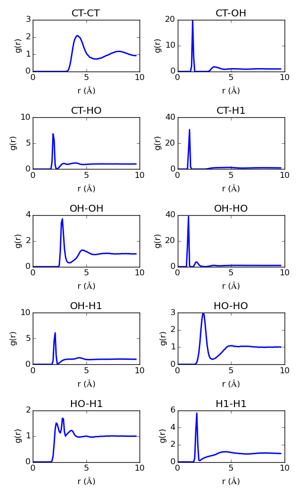

Computational Chemistry Homework 3
1 Plotting useful quantities
To plot these and for some convenient analysis functions I defined some python utility functions. See this section for more details.
1.1 Pair correlation functions
Here we use a python function calculate_pair_corr to automate the collection of pair correlation data over all pairs of atom types. (I hope I got the function right!).
from openmd_tools import * import matplotlib.pyplot as plt pairs = get_all_pairs(['CT', 'OH', 'HO', 'H1']) plt.figure(figsize=(6, 10)) for i, pair in enumerate(pairs): plt.subplot(5, 2, i+1) r, gr = calculate_pair_corr('calculations/collection.dump', *pair) plt.plot(r, gr, lw=2) plt.title('{0}-{1}'.format(*pair)) plt.xlabel('r ($\AA$)') plt.ylabel('g(r)') plt.locator_params(nbins=3) plt.tight_layout() plt.savefig('images/gofr.png', dpi=200)

1.2 Mean Squared Displacement
The plot is shown below.
from openmd_tools import read_msd import matplotlib.pyplot as plt plt.figure(figsize=(3,4)) t, msd = read_msd('calculations/collection.rcorr') plt.plot(t/1000.,msd, lw=2) plt.ylabel('MSD ($\AA^{2}$)') plt.xlabel('Time (ps)') plt.ylim(0,275) plt.locator_params(nbins=5, axis='x') plt.tight_layout() plt.savefig('images/msd.png', dpi=300)
1.3 Velocity Autocorrelation Function
The plot for the normalized velocity autocorrelation function is shown below.
from openmd_tools import read_vel_corr import matplotlib.pyplot as plt plt.figure(figsize=(3,4)) t, vcorr = read_vel_corr('calculations/fine.vcorr') plt.plot(t/1000.,vcorr/vcorr[0], lw=1) plt.ylabel('Velocity Autocorrelation Function') plt.xlabel('Time (ps)') plt.xlim(0,1.5) plt.ylim(-0.3, 1) plt.locator_params(nbins=5, axis='x') plt.tight_layout() plt.savefig('images/vcorr.png', dpi=300)
2 Methanol MD Trajectory

3 Diffusion Constants
To calculate the diffusion constant from the slope of the MSD data we perform a linear regression fit to estimate the slope. The value calculated from the Green-Kubo relations matches fairly well with the Einstien relation, considering the small magnitude of the quantity. One source that might have introduced some error is my approach of calculating DGreen-Kubo without non-discretizing it. Both calculated values are very close the to experimental value of of 1.46e-9 m2/s reported in this paper.
from openmd_tools import * import matplotlib.pyplot as plt import numpy as np t, msd = read_msd('calculations/collection.rcorr') slope, interval = msd_slope_and_interval(t, msd, tstart=0) msd2 = np.dot(np.column_stack([t**1, t**0]), np.array([slope, interval])) plt.figure(figsize=(3,4)) plt.plot(t/1000, msd, lw=2, label='calculated data') plt.plot(t/1000, msd2, 'r--', lw=2, label='linear fit') plt.ylabel('MSD ($\AA^{2}$)') plt.xlabel('Time (ps)') plt.legend(loc='best', fontsize=8) plt.ylim(0,275) plt.locator_params(nbins=5, axis='x') plt.tight_layout() plt.savefig('images/msd-fit.png', dpi=300) D_einstien = get_D_einstien(t, msd) * 1e-5 # A**2/fs to m**2/s print ('The Diffusion coefficient from the Einstien Relation is : {0:1.3f}e-9 m^{{2}}/s'.format(D_einstien*1e9)) t, vcorr = read_vel_corr('calculations/fine.vcorr') D_gk = get_D_greenkubo(t, vcorr) * 1e-5 #A**2/fs to m**2/s print('The Diffusion coefficient from the Green-Kubo Relation is : {0:1.3f}e-9 m^{{2}}/s'.format(D_gk*1e9))
The Diffusion coefficient from the Einstien Relation is : 1.638e-9 m^{2}/s
The Diffusion coefficient from the Green-Kubo Relation is : 1.017e-9 m^{2}/s
4 Power Spectrum
The plot of the power spectrum is shown below.
vcorr2spectrum -f calculations/fine.vcorr -o calculations/fine.pspect
reading File
from openmd_tools import read_power_spectrum import matplotlib.pyplot as plt t, p = read_power_spectrum('calculations/fine.pspect') plt.figure(figsize=(3,4)) plt.plot(t / 1000, p * 1000, lw=1) plt.ylabel('Power (arb. units)') plt.xlabel('Time (ps)') plt.xlim(0, 1.65) plt.locator_params(nbins=5, axis='x') plt.tight_layout() plt.savefig('images/pspect.png', dpi=300)
5 Python Utilities for reading OpenMD files
Here we define some python utility functions that will help with the various problems in this problem set. This file is available at ./openmd_tools.py.
import numpy as np import itertools import subprocess import matplotlib.pyplot as plt import os def get_all_pairs(atomtypes): ''' Returns a list of all possible pairs from a list of atomic speicies. ''' return list(itertools.combinations_with_replacement(atomtypes, 2)) def calculate_pair_corr(filepath, atom1, atom2): ''' Convenience function to provide for fast calculations of pair correlation functions Strangely, I could not get StaticProps to dump to a specified folder/file, so we have to take care to change directories and return data ''' try: # If a path is spefified wd, filename = filepath.rsplit('.')[0].split('/') except: # If only filename is specified filename = filepath.rsplit('.') wd = '.' cmd = 'StaticProps -i {2}.dump -g --sele1="select {0}" --sele2="select {1}" ' cmd = cmd.format(atom1, atom2, filename) cwd = os.getcwd() os.chdir(wd) subprocess.call(cmd, shell=True) os.chdir(cwd) return read_pair_corr('{0}/{1}.gofr'.format(wd, filename)) def read_pair_corr(filepath): '''Reads the pair correlation function from a gofr file''' return np.loadtxt(filepath, skiprows=3, unpack=True) def read_msd(filepath): '''Reads the mean square displacement from the rcorr file''' return np.loadtxt(filepath, skiprows=4, unpack=True) def read_vel_corr(filepath): '''Reads the velocity correlation function from the vcorr file''' return np.loadtxt(filepath, skiprows=4, unpack=True) def read_power_spectrum(filepath): ''' Reads the power spectrum from a pspect file ''' return np.loadtxt(filepath, unpack=True) def msd_slope_and_interval(t, msd, tstart=0): ''' Linear regression fitting for MSD data ''' t_stack = np.column_stack([t[tstart:]**1, t[tstart:]**0]) b, res, rank, s = np.linalg.lstsq(t_stack, msd) slope, interval = b return slope, interval def get_D_einstien(t, msd, tstart=0, d=3): '''Diffusion coefficient from Einstien relation''' slope, interval = msd_slope_and_interval(t, msd, tstart) return slope / 2. / d def get_D_greenkubo(t, vcorr): '''Diffusion coefficeint from Green-Kubo Probably better to make this continuous ''' return np.abs(np.sum(t * vcorr / 3) /len(vcorr))